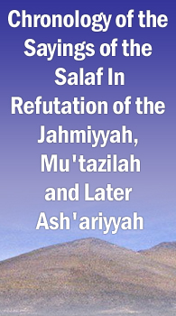

Monday, 11 August 2025
Home
•
About Us
•
Contact Us
HOME
THE QURAN
THE SUNNAH
THE COMPANIONS
THE SUCCESSORS
THE SALAF
THE LATER SCHOLARS
ARTICLES
REPORTS
LOGIN
SEARCH
TAGS
RSS
The Later Scholars
Home
/
The Later Scholars
RSS Feed
Imaam Ibn Baz: Do Not Study With This Hardcore Jahmite!
Imaam Ibn Baz was asked the following question (mp3): This questioner says: What is your opinion regard ...
Monday, March 24 2014 - by
Abu Iyaad
Al-Qadi Abd al-Wahhaab al-Malikee (d. 422H) Explains the Aqidah of Ibn Abi Zayd al-Qayrawani on al-Uluww Bil-Dhaat
The Imaam of the Maalikees of his time, Abd Allaah Abu Muhammad bin Abi Zayd al-Qayrawaanee (d. ...
Friday, August 26 2011 - by
Abu Iyaad
Abdul-Qaadir al-Jeelaanee (d. 561H): Refutation of the Saalimiyyah Sect Who Claim Allaah is Everywhere And Not Above His Throne Exclusively
Shaykh Abdul-Qaadir al-Jeeelaanee (d. 561H) said: And from their saying is that Allaah is in every place and there is no difference bet ...
Friday, October 02 2009 - by
Abu Iyaad
Abdul-Qaadir al-Jeelaanee (d. 561H): 'Allaah is in the Direction of Above and is Ascended Above the Throne'
Shaykh Abdul-Qaadir al-Jeeelaanee (d. 561H) said: He said, "Whatsoever is on it (the earth) will perish. And the Face of your Lord full of Majesty and ...
Friday, October 02 2009 - by
Abu Iyaad
Abdul-Qaadir al-Jeelaanee (d. 561H): From the Views of the Jahmiyyah is That Allaah Is Not Above the Throne
Shaykh Abdul-Qaadir al-Jeelaanee (d. 561H) said: Chapter: And as for the Jahmiyyah, then are ascribed to al-Jahm bin Safwaan and he used to say: ...
Friday, October 02 2009 - by
Abu Iyaad
The Salaf Who Said Allaah is Baa'inun Min Khalqihi (Separate and Distinct From His Creation)
(
7
)
The Salaf Who Figured Out And Exposed The Greatest Goal of the Jahmites
(
10
)
Latest Articles
Imaam Ibn Baz: Do Not Study With This Hardcore Jahmite!
Al-Qadi Abd al-Wahhaab al-Malikee (d. 422H) Explains the Aqidah of Ibn Abi Zayd al-Qayrawani on al-Uluww Bil-Dhaat
Al-Dhahabi in al-Siyar: The Statement of al-Muzanee (d. 264H) - The Tawhid of Any Person is Not Valid Until He Knows Allaah Is Above His Throne
Al-Qa'nabee (d. 221H) The Shaykh of Imaam Muslim: Whoever Does Not Affirm that ar-Rahmaan Ascended Over the Throne is a Jahmee
Muhammad bin Mus'ab al-Aabid (d. 228H): I Bear Witness That Allaah is Above the Throne Above the Seventh Heaven, Not as the Heretics Say
Imaam Ahmad bin Hanbal (d. 241H): Allaah Is Above the Seventh Heaven, Over His Throne, Separate and Distinct (Baa'in) From His Creation
Ismaa'eel bin Yahyaa al-Muzanee (d. 264H): Student of Imaam ash-Shaafi'ee: Allaah is Above The Throne, With His Essence (Bi Dhaatihi), Separate and Distinct (Baa'in) From His Creation
Abu Sulayman al-Khattabi (d. 386H): Allaah is Above the Heaven, Ascended Over the Throne
Khalid bin Abdullah al-Qasree: Al-Ja'd (bin Dirham) Claims Allaah Did Not Speak To Moses and Did Not Take Ibrahim as a Khalil
Sulaymaan at-Taymee (d. 143H): If I was asked 'Where is Allah?' I Would Say Above The Heaven
Learnarabic.Com
good resource
Search This Site
Other Websites
Aqidah.Com
Asharis.Com
TawhidFirst.Com

Most Popular
Concerning the Saying of Imaam at-Tahawi (d. 321H): 'The Six Directions Do Not Contain Him' And a Decisive Confutation of the Jahmites
Khalid bin Abdullah al-Qasree: Al-Ja'd (bin Dirham) Claims Allaah Did Not Speak To Moses and Did Not Take Ibrahim as a Khalil
Imaam Ahmad bin Hanbal (d. 241H): Allaah Is Above the Seventh Heaven, Over His Throne, Separate and Distinct (Baa'in) From His Creation
Al-Dhahabi in al-Siyar: The Statement of al-Muzanee (d. 264H) - The Tawhid of Any Person is Not Valid Until He Knows Allaah Is Above His Throne
Al-Qadi Abd al-Wahhaab al-Malikee (d. 422H) Explains the Aqidah of Ibn Abi Zayd al-Qayrawani on al-Uluww Bil-Dhaat
Ismaa'eel bin Yahyaa al-Muzanee (d. 264H): Student of Imaam ash-Shaafi'ee: Allaah is Above The Throne, With His Essence (Bi Dhaatihi), Separate and Distinct (Baa'in) From His Creation
Ibn Abbaas (d. 68H): Allaah Was Above His Throne Before Creating Anything
Ayyub as-Sakhtiyaanee (d. 131H): The Central Axis of the Mu'tazilah Is That They Want to Say 'There is Nothing Above the Heaven'
Ibn Abbaas (d. 68H): To Aa'ishah: 'Allaah Sent Down the Declaration Of Your Innocence From Above the Seven Heavens'
The Hadeeth of Abu Hurairah: Firdaws Is The Highest Place in Paradise and the Throne of ar-Rahmaan is Above It
Tags
aa'ishah
aasim bin alee
abbaad bin al-awaam
abdul-maalik al-asma'ee
abdul-qaadir al-jeelaanee
abdullaah bin abee ja'far ar-raazee
abdur-rahmaan al-awzaa'ee
abdur-rahmaan bin mahdee
abu al-hasan al-ash'aree
abu hurairah
abu ma'mar al-qatee'ee
abu sa'eed al-khudree
abu sulayman al-khattabi
ad-dahhaak
ahmad bin hanbal
aicp
al-asma'ee
al-istiwaa
al-muzanee
al-muzani
al-qa'nabee
al-qadi abd al-wahhab al-maliki
al-uluwww
anas bin maalik
at-tahaawi
at-tahawi
ayyub as-sakhityaanee
firdaws
habashites
hammaad bin zayd
hishaam bin ubaydullaah ar-raazee
hudooth ul-ajsaam
ibn abbaas
ibn abee shaybah
ibn abi zayd al-qayrawani
ibn jurayj
ishaaq bin raahawaih
ismaa'eel bin yahyaa al-muzanee
jahmee doubts
jareer ad-dabbee
ka'b al-ahbaar
khalid bin abdullah al-qasree
khalid bin abdullah al-qusaree
khalid bin abdulllah al-qusaree
maalik bin anas
masrooq
muhammad bin mus'ab al-aabid
muhammad bin yusuf al-firyaabee
muqaatil bin hayyaan
qutayban bin sa'eed
sa'eed bin aamir ad-dab'ee
six directions
sulaymaan at-taymee
sunayd bin daawood al-maseesee
sunni answers
tahawi
wahb bin jareer
yazeed bin haaroon
zakariyyaa as-saajee
zaynab bint jahsh
Archives
August 2025
July 2025
June 2025
May 2025
April 2025
March 2025
February 2025
January 2025
December 2024
November 2024
October 2024
September 2024
August 2024
July 2024
June 2024
May 2024
April 2024
March 2024
February 2024
January 2024
December 2023
November 2023
October 2023
September 2023
August 2023
July 2023
June 2023
May 2023
April 2023
March 2023
February 2023
January 2023
December 2022
November 2022
October 2022
September 2022
August 2022
July 2022
June 2022
May 2022
April 2022
March 2022
February 2022
January 2022
December 2021
November 2021
October 2021
September 2021
August 2021
July 2021
June 2021
May 2021
April 2021
March 2021
February 2021
January 2021
December 2020
November 2020
October 2020
September 2020
August 2020
July 2020
June 2020
May 2020
April 2020
March 2020
February 2020
January 2020
December 2019
November 2019
October 2019
September 2019
August 2019
July 2019
June 2019
May 2019
April 2019
March 2019
February 2019
January 2019
December 2018
November 2018
October 2018
September 2018
August 2018
July 2018
June 2018
May 2018
April 2018
March 2018
February 2018
January 2018
December 2017
November 2017
October 2017
September 2017
August 2017
July 2017
June 2017
May 2017
ý AboveTheThrone.Com. All rights reserved.